Tu es dans la plus grande ville de Chine : 25 millions d'habitants, plus que Paris, Londres et New York réunies. Cette page t'explique la ville en images, et où aller pour tes sorties.
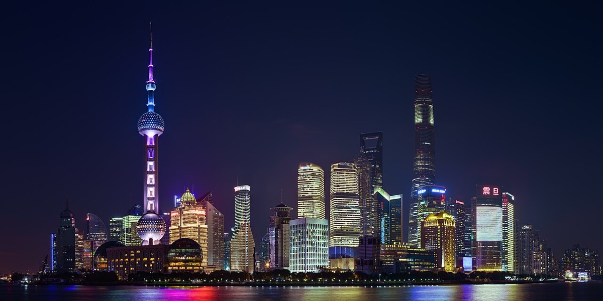
Les tours de Pudong vues depuis le Bund, la nuit. C'est l'image que tout le monde connaît de Shanghai.La règle numéro 1
Un fleuve coupe la ville en deux
Le fleuve s'appelle le Huangpu. Il sépare deux mondes très différents.
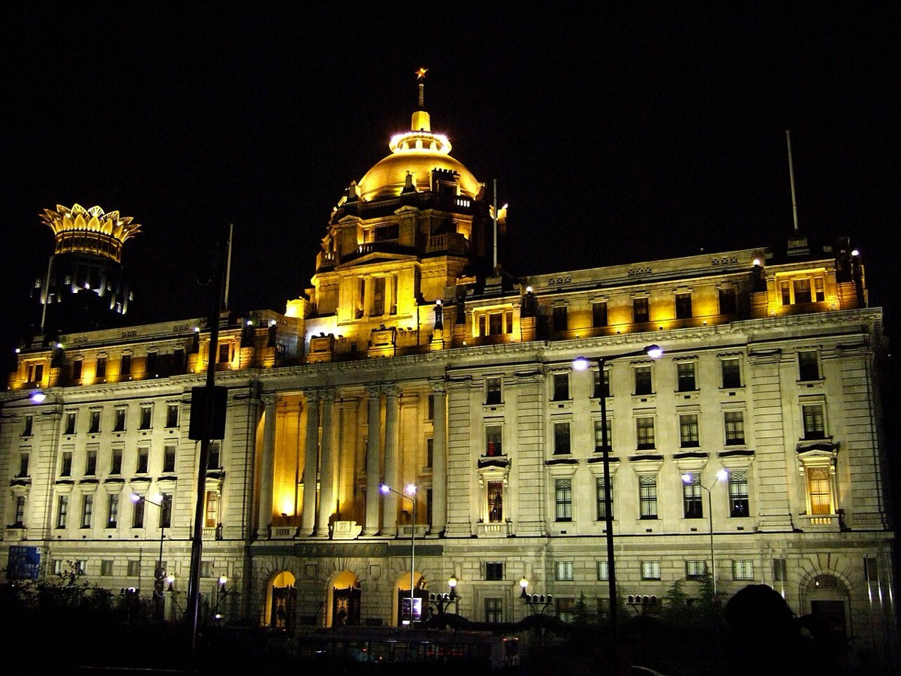
Puxi, rive ouest
La vieille ville. Les immeubles anciens, les rues avec des arbres, les cafés, les boutiques. C'est là que tu sors.
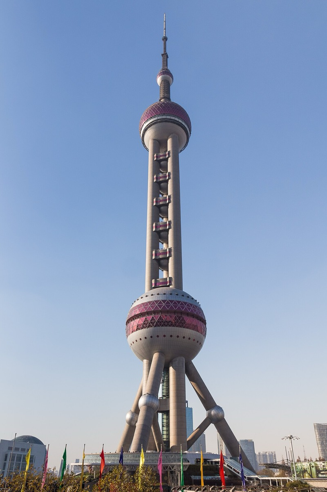
Pudong, rive est
Les gratte-ciel. Il y a 35 ans, c'étaient des champs. Tu y vas une fois, pour monter dans une tour.
Pour passer d'une rive à l'autre : le métro ligne 2 (une seule station), ou le ferry pour 2 yuans. Le ferry, c'est le plus beau trajet de la ville.
La carte de tes sorties
Où sont les 10 endroits à voir
Chaque numéro est une sortie décrite plus bas. Le fleuve, c'est la bande bleue qui serpente au milieu.
Les trois à faire en premier : 1 le Bund, 2 la Concession française, 5 les tours. Ils sont tous les trois à moins de 20 minutes de métro les uns des autres.
Comprendre en 5 points
Pourquoi Shanghai ressemble à ça
C'est une ville jeune. Il y a 180 ans, c'était un petit port de pêcheurs. Pékin, la capitale, a 3 000 ans. Shanghai, à peine 180.
Ce sont les Européens qui l'ont construite. De 1843 à 1943, des morceaux de la ville appartenaient à l'Angleterre, à la France et aux États-Unis. On appelle ça les concessions. C'est pour ça qu'on voit des immeubles européens et des platanes, comme à Paris.
Il n'y a pas de palais ni de grande muraille. Shanghai, c'est une ville de commerce. Les monuments, ce sont des banques, des hôtels et des tours. On la visite en marchant dans les rues.
C'est très sûr et très moderne. Tu peux marcher partout la nuit. Tout se paie avec le téléphone, même un beignet à 2 yuans.
C'est la saison idéale. En novembre, il fait entre 10 et 18 degrés. Les platanes deviennent jaunes. Et c'est la saison du crabe poilu, le plat le plus célèbre de la ville.
L'histoire en 8 étapes
De village de pêcheurs à ville géante
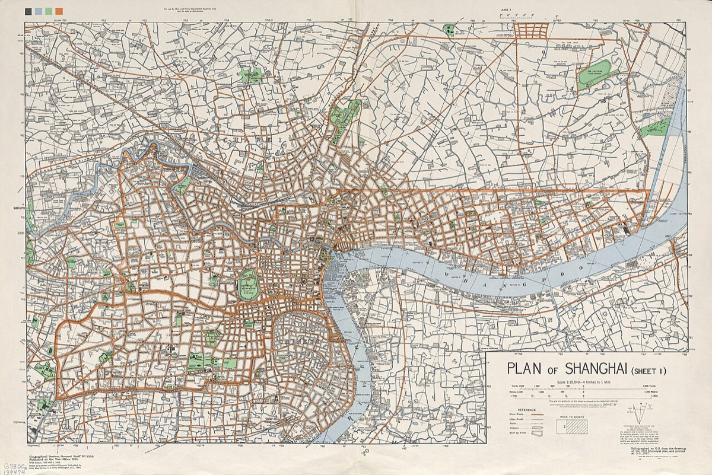
Plan de Shanghai en 1935. On voit le fleuve qui serpente et, à droite, Pudong encore vide.
1292
Un village devient une ville
Shanghai est un port où l'on vend du coton et du poisson. Il en reste la vieille ville et le jardin Yu.
1842
L'Angleterre gagne une guerre
La Chine perd la guerre de l'opium. En punition, elle doit laisser les Anglais commercer à Shanghai.
1843 à 1849
Les étrangers s'installent
Les Anglais, les Américains puis les Français obtiennent chacun un quartier où les lois chinoises ne s'appliquent pas. Ils construisent le Bund et la Concession française.
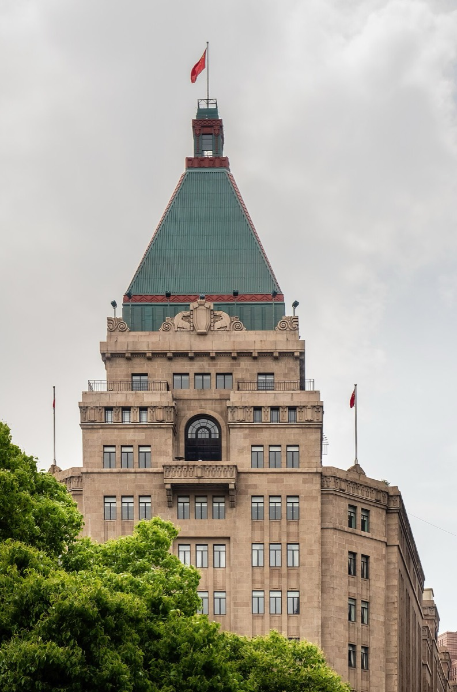
Le Peace Hotel, sur le Bund, construit en 1929. Son toit vert est le symbole de l'époque.
1920 à 1937
L'âge d'or, le « Paris de l'Orient »
Jazz, cinémas, gangsters, millionnaires. Des réfugiés russes arrivent. Le Parti communiste chinois naît ici, en 1921, dans une petite maison de Xintiandi.
1937 à 1945
Le Japon occupe la ville
Pendant la guerre, 20 000 Juifs qui fuient l'Europe sont accueillis dans le quartier de Hongkou.
1949
Les communistes prennent le pouvoir
Les étrangers partent. Shanghai devient une ville d'usines, grise, pendant 40 ans.
1990
Pudong sort de terre
Le gouvernement décide de construire un quartier d'affaires sur les champs de Pudong. En 25 ans, des tours de 600 m poussent.
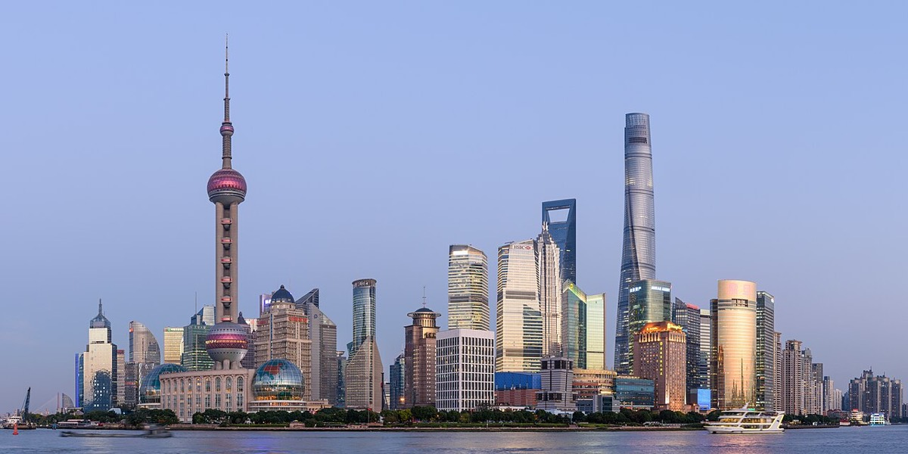
Lujiazui aujourd'hui. La plus haute, la Shanghai Tower, fait 632 mètres, deux fois la tour Eiffel.
2010
L'Exposition universelle
73 millions de visiteurs. La ville refait son métro et ses bords de fleuve. C'est le Shanghai que tu vois aujourd'hui.
Se déplacer et payer
Tout passe par ton téléphone
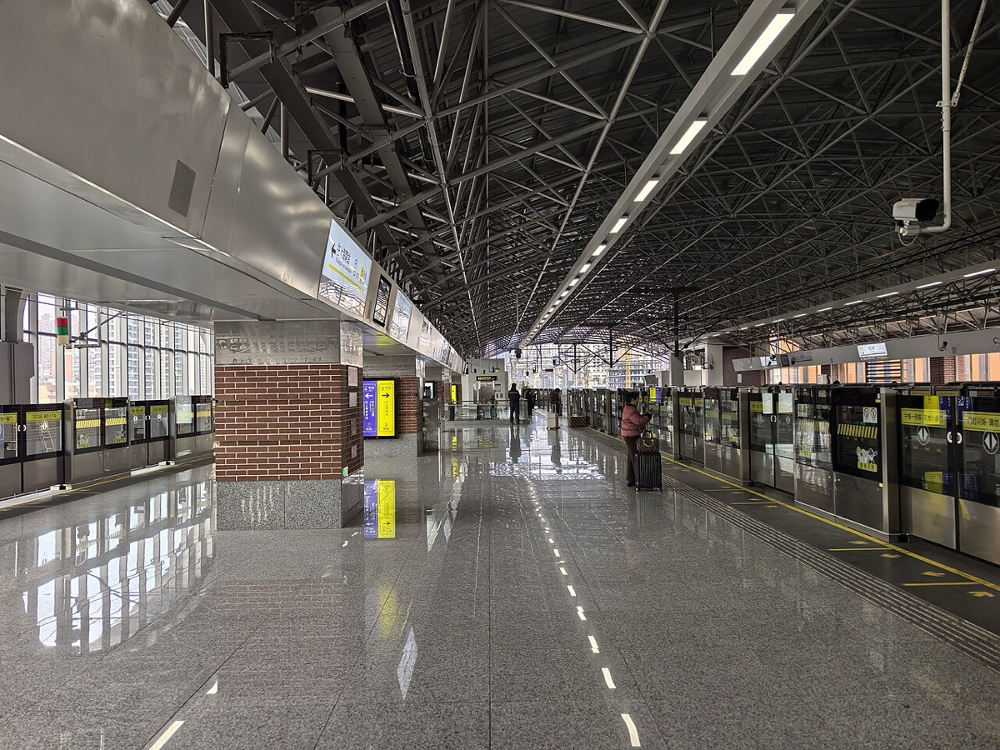
Le métro : 20 lignes, panneaux en anglais, propre et très fréquent. Entre 3 et 7 yuans le trajet.
Payer. L'app Alipay, avec ta carte bancaire dedans. Tu scannes un QR code, c'est payé. Garde quand même 200 yuans en billets.
Prendre le métro. Dans Alipay, ouvre « Transport », puis « Shanghai Metro ». Ça te donne un QR code à scanner aux portillons. Le métro ferme vers 23 h.
Prendre un taxi. L'app Didi, c'est le Uber chinois. Un trajet entre deux quartiers coûte 20 à 30 yuans. Montre toujours l'adresse écrite en chinois.
Te repérer. Apple Plans marche très bien ici. Google Maps, non : il est décalé de plusieurs centaines de mètres.
Faire du vélo. Dans Alipay, l'icône vélo bleue (HelloBike). Tu scannes un vélo, tu roules, tu le poses où tu veux. 1,5 yuan la demi-heure.
Parler. Peu de gens parlent anglais. Apple Traduction en mode conversation suffit. Pour les menus, prends-les en photo avec l'app.
Les 3 stations à retenir : Nanjing East Road pour le Bund, People's Square pour le centre, South Shaanxi Road pour la Concession française.
Les 10 sorties
Une sortie = une demi-journée
Commence par la première ce soir. Chaque carte a un bouton pour ouvrir le lieu dans Plans.
01
Le Bund
Le soir, c'est le plus beau
Une promenade de 1,5 km au bord du fleuve. D'un côté, les vieux immeubles de banques des années 1920. De l'autre, les tours de Pudong qui s'allument la nuit.
Quoi faire : Arrive vers 16 h 30. Marche du nord au sud. Entre dans le hall du Peace Hotel, c'est gratuit. Reste jusqu'à la nuit : vers 17 h 30 tout s'allume. Les lumières s'éteignent à 22 h.
Un jardin chinois vieux de 450 ans, avec des bassins, des rochers et des pavillons en bois. Autour, un bazar avec des toits chinois (reconstruits, mais jolis).
Quoi faire : Vas-y dès 8 h 30, avant la foule. Entrée 40 yuans. Pour les raviolis, évite la grande queue du rez-de-chaussée de Nanxiang et monte à l'étage.
C'est le quartier des gratte-ciel, en face du Bund. La Shanghai Tower fait 632 m, la 3e plus haute du monde. Il y a aussi la Pearl Tower, celle avec les boules roses.
Quoi faire : Marche sur la passerelle ronde au-dessus des voitures. Monte dans la Shanghai Tower (118e étage, 180 yuans) seulement s'il fait beau. Reviens par le ferry, 2 yuans.
People's Square, c'est le centre de la ville : un grand parc, des musées, et la rue Nanjing, piétonne et pleine d'enseignes lumineuses, comme les Champs-Élysées.
Quoi faire : Le musée de Shanghai est gratuit (montre ton passeport). Puis marche vers l'est sur Nanjing Road : au bout, tu arrives au Bund.
1933 Old Millfun est un vieil abattoir en béton, avec des escaliers et des passerelles partout. On dirait un décor de film. Gratuit.
Quoi faire : Juste à côté, le musée des réfugiés juifs raconte comment 20 000 Européens ont été accueillis ici pendant la guerre. Reviens à pied le long de la rivière Suzhou.
Pas de piment ici, contrairement au Sichuan. Beaucoup de sauce soja, un peu de sucre, et surtout des raviolis. Un repas simple coûte 30 à 60 yuans.
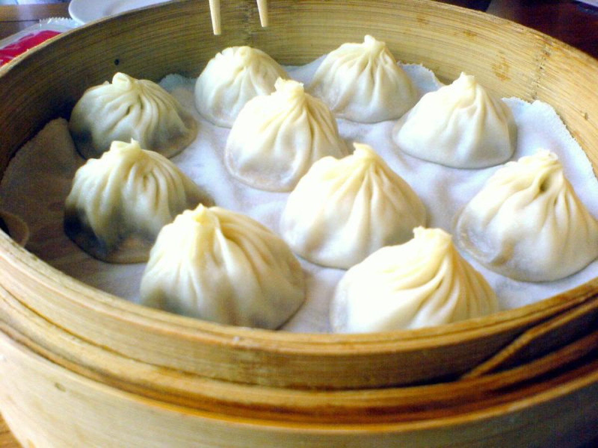
Xiaolongbao
Des raviolis vapeur remplis de bouillon. On les perce, on boit le jus, puis on les mange. Jia Jia Tang Bao, près de People's Square.
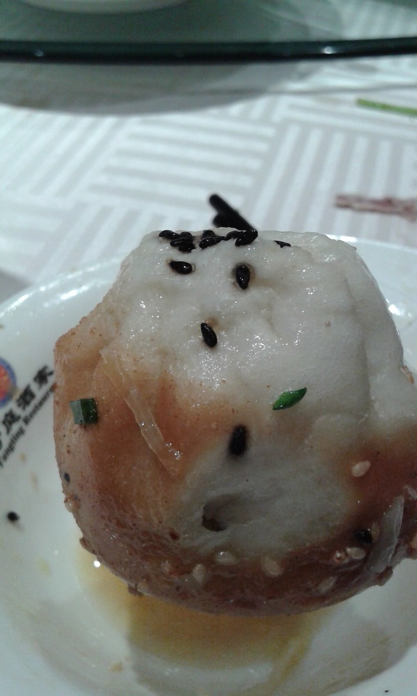
Shengjianbao
Pareil, mais grillés dessous, croustillants. C'est le petit déjeuner des Shanghaïens. Yang's Dumplings, à Jing'an.
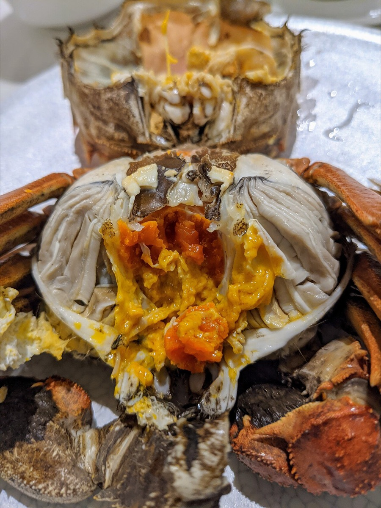
Crabe poilu
Le plat star d'octobre et novembre. Un crabe vapeur, trempé dans du vinaigre au gingembre. Tu es pile dans la saison.
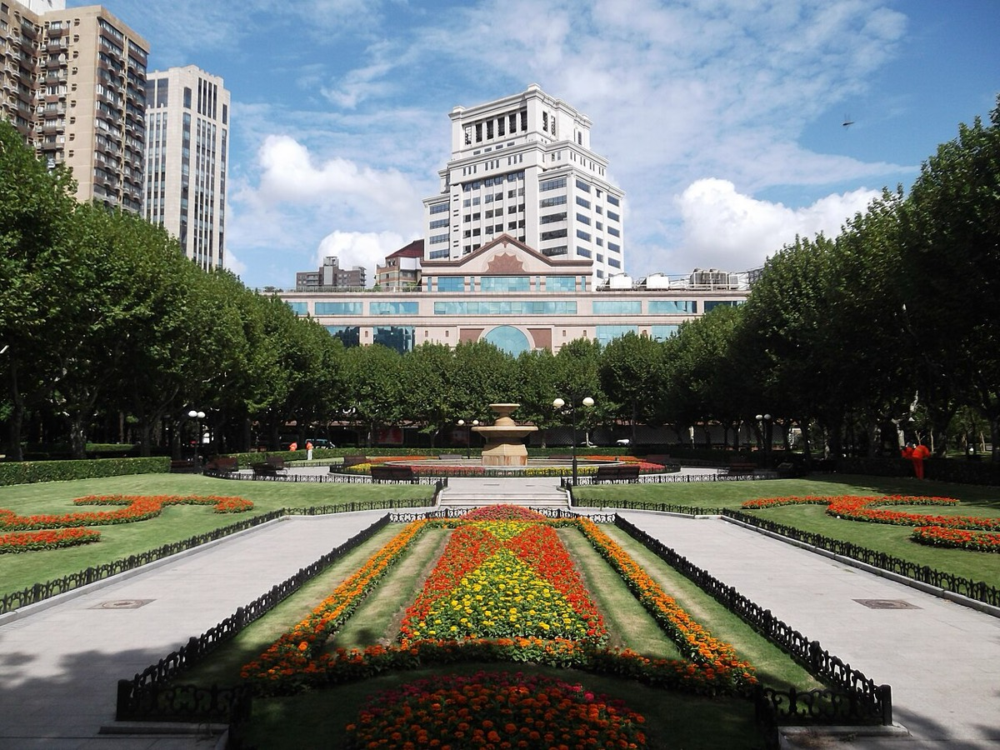
Le petit déjeuner de rue
Avant 9 h, des stands vendent des beignets (youtiao), des galettes (dabing) et du lait de soja chaud. 5 yuans le tout.
À savoir : on commande en scannant un QR code sur la table. On ne laisse pas de pourboire. Les cuisines ferment tôt, vers 21 h. Les Chinois dînent à 18 h.
Selon ton envie
J'ai envie de…
La Concession française, entre Wukang Lu, Anfu Lu et Fuxing Lu. Rues calmes, arbres, un café tous les 50 mètres. Tu peux te perdre sans risque.
Le Bund à 17 h, la passerelle ronde de Lujiazui, 1933 Old Millfun, le Wukang Building. Ce sont les quatre décors que tout le monde reconnaît. Le matin tôt, il n'y a personne au Bund.
Anfu Lu et Wukang Lu pour les marques locales, Huaihai Lu pour les grandes enseignes, TX Huaihai pour le streetwear des jeunes marques chinoises, Zhangyuan (Jing'an) pour le luxe.
Zhongshan Park pour le vintage, TX Huaihai et YK3 (Yuyuan Road) pour les sneakers. Prix proches de Tokyo.
% Arabica (Wukang Lu), Manner (partout, 15 yuans), Seesaw. Shanghai a plus de cafés que n'importe quelle ville au monde. Le wifi marche, les prises sont rares.
Found 158 (Julu Lu, des bars en sous-sol), Yongkang Lu, les rooftops du Bund. Pour danser : Elevator ou ALL. Attention, la semaine tout est calme après 23 h.
Le musée de Shanghai (gratuit), Power Station of Art (art moderne, gratuit), les malls de Jing'an, ou monter dans la Shanghai Tower.
Suzhou, à 25 minutes en train : des jardins chinois classés à l'Unesco. Ou Zhujiajiao, un village sur l'eau, à 1 h en métro (ligne 17). Suzhou est mieux.
Les berges du West Bund : plat, long, sans feux rouges. Ou le long de la rivière Suzhou.
Fuxing Park à 7 h du matin : tai-chi, danses, chant d'opéra. C'est la vraie vie des Shanghaïens. Ou Century Park, à Pudong.
Pièges à éviter
Ce qui arrive aux nouveaux
L'arnaque au thé. Sur le Bund, des jeunes sympas te proposent de boire un thé avec eux. À la fin, la note fait plusieurs milliers de yuans. Dis non, souris, continue.
Les faux taxis. Ignore ceux qui t'abordent à la sortie des gares. Un vrai taxi a un compteur et ne négocie pas.
Le passeport. Les musées et les tours le demandent à l'entrée. Garde-le sur toi.
Réserver. Le week-end, le musée de Shanghai et la Shanghai Tower ont une heure de queue si tu n'as pas réservé (via WeChat).
Filmer. Dans la rue, pas de problème. Mais pas de drone : toute la ville est interdite. Et pas de caméra aux contrôles du métro.
Le dernier métro. Vers 22 h 30 sur certaines lignes. Vérifie avant de sortir le soir.
Fumer. Interdit partout à l'intérieur, et c'est vraiment appliqué.
Urgences. Police 110, ambulance 120. Consulat de France : 1375 Huaihai Middle Road, 6e étage.

.jpg){kind=link}